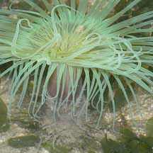
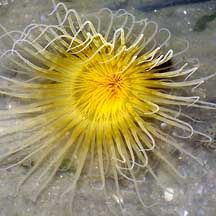
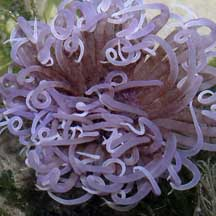
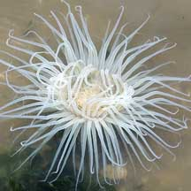
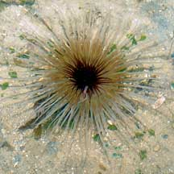
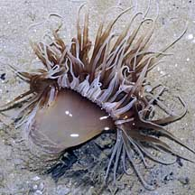

|
|
| cerianthid text index | photo index |
| Phylum Cnidaria > Class Anthozoa > Subclass Zoantharia/Hexacorallia > Order Ceriantharia |
| Common
cerianthid awaiting identification* updated Nov 2019 Where seen? This cerianthid is commonly seen on our Northern shores, sometimes in large numbers and often in a variety of colours and patterns. On silty sand as well as among seagrasses and sometimes near coral rubble. Features: 10-15cm in diameter. The long tentacles are rather fat and taper to a slender tip. The ring of shorter inner tentacles are sometimes different in colour from the long tentacles. Some are plain, others have variegated long tentacles. Body column usually pale. Little black Phoronid worms are often seen emerging from the sides of their tubes. |
|
 Furry tube and smooth body column. Chek Jawa, Jul 05 |
 Long outer tentacles, short inner tentacles. Changi, Jul 04 |

|
 Chek Jawa, Sep 03 |
 Changi, Jul 04 |
 Cyrene Reef, Apr 08 |
*Species are difficult to positively identify without close examination.
On this website, the animals are grouped by external features for convenience of display.
| Common cerianthids on Singapore shores |
On wildsingapore
flickr
|
| Other sightings on Singapore shores |
 Pulau Berkas, May 10 |